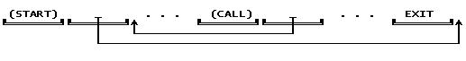
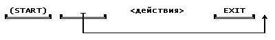
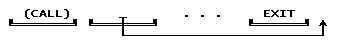
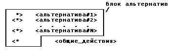
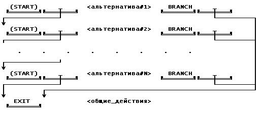
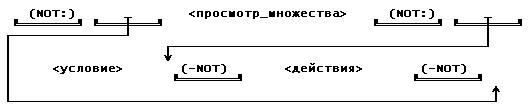

Title
Содержание
Beginning of the text
A note for non-Russian speakers. The main ideas of this work have been published as: Gassanenko, M.L. BacFORTH: An Approach to New Control Structures. Proc. of the EuroForth'94 conference, 4-6 November 1994, Royal Hotel, Winchester, UK, p.39-41.
(c) М.Л. Гасаненко, 1999
(c) M.L.Gassanenko, 1999
Предупреждаю, что программирование на стековой машине с механизмом откатов требует специфических навыков, это можно сравнить с изучением Форта с самого начала. С другой стороны, мы пишем на Форте, и BacFORTH (на Бэкфорте) тоже писать можно. На мой взгляд, это удобнее, чем просто Форт. Если что - свяжитесь со мной.
Если появится возможность использования этой вещи в каких-либо проектах - я буду заинтересован в сотрудничестве.
Мои адреса:
mlg@forth.org - писать следует сюда, но если меня
там нет, можно попробовать mlg@iias.spb.su, mlg@post.tepkom.ru, gml@ag.pu.ru.
Не забывайте, что существуют отпуска и праздники!
Слово -- есть знак комментария \ , это связано с тем, что на ЭВМ серии ЕС символов {|}\ не было или на клавиатуре, или на АЦПУ.
Конструкция *> ... <*> ... <*> ... <* называлась по-разному. Одно время я использовал синтаксис { ... | ... | ... } , но сейчас стало принято заключать в фигурные скобки локальные переменные, поэтому я склоняюсь к синтаксису {| ... || ... || ... |} или даже .{ ... .|. ... .|. ... }.
Отложенный cut полезен как средство создания своих ориентированных на задачу операторов отсечения: без него или можно обойтись, или же он используется настолько часто, что следует ввести специальную конструкцию.
Зав. кафедрой канд. ф.-м. наук доцент СЕРГЕЕВ Сергей Львович
Научный руководитель доктор ф.-м. наук проф. ТУЗОВ Виталий Алексеевич
Санкт-Петербург
- 1992 -
Система BacFORTH является расширением стандарта Форт-83. Она предоставляет
пользователю гораздо более мощный по сравнению с другими языками программирования
набор управляющих конструкций.
Использование фортовского адресного интерпретатора нестандартным
способом позволило реализовать бэктрекинг предельно просто и эффективно.
Наряду со стандартными система включает следующие
структуры управления:
Система позволяет совместно использовать процедуры-предикаты и логические
значения. Процедуры, работающие в режиме бэктрекинга, можно рассматривать
как абстрактные итераторы.
Бэктрекинг представляет собой метод организации перебора вариантов в глубину и заключается в том, что в точке, где возможен выбор нескольких вариантов, выбирается один из них, на специальном стеке оставляется точка возврата и продолжается выполнение программы. Такая передача управления вперед называется успехом. Если впоследствии оказывается, что рассматриваемый вариант неудачен, то вырабатывается неуспех, смысл которого в том, что делается откат назад, к последней точке возврата, где выбирается следующий вариант. Если вариантов больше нет, то и там снова вырабатывается неуспех. Таким образом, успех влечет дальнейшую проработку варианта, а неуспех - отказ от этого варианта и возврат с целью рассмотреть другой. Разумеется, данный метод организации перебора может быть использован не только для организации поиска подходящих вариантов методом перебора. Бэктрекинг может намного увеличить выразительную силу языка программирования и является очень полезным средством.
Итак, допускается передача управления как вперед, так и назад. Передача управления вперед называется успехом, a назад - неуспехом. Вырабатывая успех, процедура может оставить на специальном стеке точку возврата. Этa точка возврата содержит информацию, необходимую для возобновления процедуры при откате. При откате управление передается на самую последнюю из имеющихся на стеке точку возврата.
Режим бэктрекинга позволяет создавать обратимые процедуры, т.е. процедуры, восстанавливающие при откате исходное состояние. Возможны два подхода к их реализации. Первый - сохранить где-либо информацию об исходном состоянии с тем, чтобы при откате восстановить его. Второй - выполнить при откате обратные действия.
Слова, оставляющие точку возврата, условимся называть трассирующимися (в честь трассы, остающейся на стеке откатов)
Трассирующаяся (backtrackable) процедура может вырабатывать значения, удовлетворяющие определенному условию (вырабатывая успех для каждого из этих значений), или проверять условие (вырабатывая успех, если оно истинно ). Процедуры первого типа будем называть генераторами, а второго - фильтрами.
В основу использования бэктрекинга в системах логического программирования [10] положена следующая интерпретация: каждой процедуре соответствует условие. Процедура вырабатывает успех, если условие выполняется. Если выполнение возможно для нескольких случаев, она вырабатывает успех для каждого случая (процедура вырабатывает успех несколько раз, каждый раз устанавливая одно из состояний, при котором условие выполняется. В Прологе значения остаются в переменных, фигурирующих в записи предиката, и присваивание им значений можно рассматривать как установление определенного состояния). Таким образом процедура может вырабатывать значения, удовлетворяющие условию, завершаясь успехом для каждого из них. Успех последовательности процедур понимается как признак того, что все условия, соответствующие процедурам, выполнены (логическое И). Операция ИЛИ реализуется как конструкция, завершающаяся успехом, когда любая из альтернатив-процедур (или альтернатив-последовательностей процедур) завершается успехом. Обзор по логическому программированию можно найти в работе Агафонова и др.[1]. Попытки дополнить возможностями Пролога другие системы программирования предпринимались неоднократно; упомянем здесь лищь работу Карлсона [5], где описывается использование метода успешных продолжений для построения интерпретатора хорновских клозов средствами Лиспа. В работах Чарльтона [11] и Родригеза [12,13,14] описывается нестандартное использование механизма интерпретации шитого кода для обхода дерева решений в задачах типа анализа образцов и при работе с системой правил в экспертной системе. Для всех этих работ характерно использование вспомогательного флажка, сигнализирующего об успехе проверки. В работах Родригеза [12,13] механизм откатов не используется, если одна из альтернатив отрабатывает успешно, то остальные не проверяются. В работах Чарльтона [11] и Родригеза [14] для реализации механизма откатов в качестве стека откатов используется фортовский стек данных, что не очень удобно. Ниже будет показано, что при реализации механизма откатов можно обойтись и без вспомогательных данных, используя только механизм интерпретации кода. Кроме того, описанные в [11,12,13,14] системы являются средствами решения конкретных задач.
В данной работе описывается язык BacFORTH, сочетающий в себе как общепринятые, так и новые структуры управления, в т.ч. средства организации перебора с откатами (бэктрекинга) и управления этим перебором.
Описание языка Форт можно найти в книге [2] или же [3,4]. Выбор
этого языка объясняется тем, что это один из немногих машинно-независимых
языков, дающих доступ к структуре исполнимого кода и механизму его исполнения.
Изначально заводится обычная фортовская переменная. Если она используется
как динамическая, то после размещения она будет содержать в поле параметров
адрес отведенной для нее области, состоящей из двух ячеек, первая из которых
будет содержать значение, а вторая - указатель на ранее отведенную область.
Слово @R определено на ассемблере. Его эквивалентное определение
на Форте может выглядеть так:
Слова START и EMERGE ограничивают блок, а слово DIVE обеспечивает
его рекурсивный вызов. DIVE может встречаться несколько раз и находиться
внутри структур IF...THEN, BEGIN...UNTIL и т.д. Конструкция START...EMERGE
(без DIVE) эквивалентна использованию вспомогательной (нерекурсивной) процедуры
( после START на стеке возвратов остается адрес части, следующей за EMERGE,
EMERGE компилирует EXIT ).
Kонструкция
Помимо избавления от вспомогательных процедур, преимуществом этой
конструкции является то, что предотвращается разнос связанных по логике
программы операторов в разные части текста. (Действительно, удобнее, если
действия, выполняемые при инициализации перебора и после его окончания
записаны там же, где и тело.)
Для реализации суперцикла использованы следующие вспомогательные
слова:
: (START) R> DUP @ >R 2+ >R ;
Слова немедленного исполнения START , DIVE и EMERGE компилируют
слова (START) , (CALL) , EXIT и адреса за ними следующим образом:

Использование конструкции START-EMERGE без DIVE эквивалентно использованию
вспомогательной процедуры.
Слово ENTER вызывает фрагмент шитого кода, адрес которого лежит
на стеке:
: ENTER >R ; ( ';' компилирует EXIT )
Будем рассматривать сразу два уровня шитого кода (ШК). Имеем две
высокоуровневые процедуры: вызывающую и вызываемую. На вершине стека возвратов
- адрес оставшейся части ШК вызывающей
: SUCC COMPILE R@ COMPILE ENTER ; IMMEDIATE
Чтобы вызвать возврат из продолжения, т.е. из фрагмента ШК, процедура,
скомпилированная в него, должна выполнить RDROP EXIT .
: FAIL COMPILE RDROP COMPILE EXIT ; IMMEDIATE
Обратите внимание на то, что слово
: 1-10 1 BEGIN SUCC
Слово 1SUCC иногда позволяет сэкономить одну ячейку в пространстве
шитого кода и один вызов во время исполнения :
Итак,
CONT (continue) - обеспечивает успех процедуры. После отката будет
выполнен код, скомпилированный за CONT . ( Oбратите внимание, что при откате
управление передается на последнюю точку возврата, а она установлена внутри
процедуры).
PRO (prologue,PROLOG) - обеспечивает работоспособность слова CONT
. Обычно это первое слово в определении. Оно переносит адрес продолжения
(по которому надо перейти при успехе) со стека возвратов на L-стек и оставляет
точку возврата, которая при откате снимает адрес продолжения с L-стека
и вызывает неуспех процедуры.
: PRO R> R> >L ENTER LDROP ;
Заметим, что словo
Наряду с записью
до -> усп
будем использовать запись
( до -> усп / после <- отк ) или даже
Трассирующуюся процедуру, перебирающую значения, принадлежащие соответствующему
множеству, можно считать абстрактным итератором. Может показаться необычным,
что такой процедуре - всего одному слову - нужно уделять столько же внимания,
сколько и циклу - структуре из нескольких слов. Практика программирования
на языке BacFORTH показала, что легче всего использовать слова вида ( сост1
<-> сост2 ) или же ( сост1 -> сост2 / <- ). В конце концов, если
манипуляции со стеком кажутся чересчур сложными, можно использовать обычные
переменные или переменные типа QUAN, возможно, с еще одним полем кода для
обратимого присваивания.
START <действия> EMERGE <действия-после-неуспеха>
после того, как <действия> завершатся неуспехом, будет выполнена
часть, следующая за EMERGE. Скомпилированный код выглядит следующим образом:
При использовании в виде
START PRO ... DIVE ... CONT EMERGE
является аналогом прологовской рекурсии
P :- ... , P, ... .
Разница между START PRO ... DIVE ... CONT EMERGE и START ... DIVE
... EMERGE в том, что в первом случае часть после DIVE выполняется после
успеха рекурсивного вызова, а во втором случае часть после DIVE выполняется
после возврата.
Данная конструкция использует L-стек примерно так же, как START-DIVE-EMERGE
использует стек возвратов.
Того же эффекта можно достичь, используя RECURSE в теле вспомогательной
трассирующейся процедуры.
Слова *> , <*> и <* компилируют следующий код:
В духе логического программирования можно трактовать текст
Другой способ реализации блока альтернатив -
START PRO START <альтернатива#1> CONT EMERGE
может быть неудобен прежде всего тем, что использует L-стек. Однако
это может обернуться и преимуществом; кроме того, вместо внутренних блоков
START-EMERGE можно использовать вспомогательные определения, что может
быть удобно в некоторых задачах.
CUT: <действия> -CUT
Слово -NOCUT может использоваться в качестве пары для CUT: в случае,
если оказывается, что точки возврата уничтожать не надо. Возможна вложенность.
Синтаксический контроль при компиляции отсутствует, соответствие определяется
во время исполнения. Это позволяет использовать cut без ограничений внутри
других структур управления, например так:
CUT: . . . IF -CUT ELSE -NOCUT THEN
Teкст " CUT: P -CUT " можно трактовать как " Exists x:P(x) ". Oбратите
внимание, что после того, как P выработает успех, отката к P больше не
будет.
CUT: . . . CUT< . . . IF NOCUT! THEN . . . >CUT
CUT: отмечает на стеке возвратов начало отсекаемой области.
CUT< отмечает на стеке возвратов конец (предположительно) отсекаемой
области. При откате точки возврата (по умолчанию) будут уничтожены, если
не будет выполнен оператор NOCUT!.
Слова ALWAYSCUT< и NEVERCUT< аналогичны словам CUT< и NOCUT<
, но в отличие от последних на них слова CUT! и NOCUT! не действуют, т.к.
они оставляют для них неверный адрес.
>CUT обозначает конец отложенного оператора cut.
Oператоры CUT могут быть вложенными, но есть ограничение: соответствующие
слова CUT: , CUT< и >CUT должны быть вместе или внутри, или вне "обрубаемого"
участка.
Как и в случае обычного cut, снтаксический контроль при компиляции
отсутствует, и соответствие определяется во время исполнения.
Операторы CUT! и NOCUT! могут выдаваться по несколько раз, уничтожение
точек возврата будет или не будет производиться в соответствии с последним
из них.
: P PRO ( A B C D <-> A B A B )
Использование NOCUT< в 1-ой альтернативе предотвращает повторный
успех, если на стеке лежит A A A A .
NOT: P -NOT
вырабатывает успех, если P завершается неуспехом, ни разу не выработав
успеха. Если P вырабатывает успех, все точки возврата, установленные P
, уничтожаются и конструкция завершается неуспехом. На месте P может быть
любой осмысленный текст.
В зависимости от того, проверяет ли P условие или перебирает элементы
некоторого множества, успех " NOT: P -NOT " можно трактовать как " not
P(x) " или " not Exists x:P(x) ".
Квантор общности, выраженный через отрицание, записывается таким
образом:
ALL <перебор_элементов_множества> ARE <условие> OTHER <действия>
WISE
и компилирует код:
Преобразование логического значения в успех/неуспех и наоборот.
Цикл FOREVER
Слово ONTRUE завершается неуспехом, если значение на стеке - ложь
: ONTRUE IFNOT FAIL THEN ;
Слово ONFALSE завершается неуспехом если значение на стеке - истина
: ONFALSE IF FAIL THEN ;
Oбратите внимание, что эти слова не оставляют точек возврата.
Для этих слов существует также и альтернативный синтаксис:
ONTRUE ?
Эти слова используются очень часто, в том числе и в качестве условного
оператора до конца определения. Для этих же целей служат и слова
: ?/DROP IFNOT DROP FAIL THEN ;
Конструкция PREDICATE . . . SUCCEEDS кладет на стек истину, если
текст между PREDICATE и SUCCEEDS вырабатывает успех ( в этом случае точки
возврата уничтожаются), и ложь в противном случае. Точно также конструкция
PREDICATE . . . FAILS кладет на стек истину, если текст между PREDICATE
и FAILS завершается неуспехом.
Oбратите внимание, что возможна следующая конструкция:
: FOREVER BEGIN SUCC AGAIN ;
Слово B! ( N V -> / <- ) работает как ! , но при откате восстанавливает
значение переменной. Слово BC! - это обратимое C! .
Слова
B<smth> означает "backtrackable <smth>" , а <smth>B означает
"<smth> when backtracking" ("<smth> при откате").
Кроме того, на практике полезны еще две операции, не имеющие в Форте
прямых аналогов:
: SWAPB PRO BACK SWAP TRACKING CONT ;
Входной поток :
bслово -> слово2
: -> STATE @ ONFALSE -- во время компиляции ничего не делает
Для выхода из INTERPRET мой Forth использует "пустое" слово, эквивалентное
EXIT . Eго можно определить как
: X RDROP ; IMMEDIATE 0 LATEST 1+ C!
Как и EXIT , это слово всегда завершается неуспехом и вызывает откат.
Например, мы хотим знать, сколько слов в словаре FORTH.
0 ' FORTH >BODY NAMES -> DROP 1+ <return>
Tаким образом можно тестировать слова "вручную", без вспомогательных
тестовых процедур.
Во многих cлучаях слово RUSH эквивалентно EXECUTE EXIT (а именно,
если ему передано CFA обычного фортовского слова без RDROP-ов). Как и EXIT
, оно загружает (pop) IP со стека возвратов, после чего работает как EXECUTE
. Это слово позволяет избавиться от лишнего значения на стеке возвратов.
Определить его стандартными средствами Форта невозможно.
Таким образом, если мы определим
Слово RUSH> работает только если cкомпилированo:
Переменные типа QUAN были впервые описаны в работе [15], наиболее
распространенная в СССР реализация описана в [2]. Одна из проблем, возникающих
при реализации определяющих слов для слов с несколькими полями кода, состоит
в том, что слово DOES> , изменяющее поле кода, должно вызывать выход из
исполняемого фрагмента шитого кода определяющего слова. В [2] эта проблема
решается с помощью вспомогательных определений, от которых можно избавиться,
используя START-EMERGE.
: CFA CREATE IMMEDIATE 1- CFL * ,
: BQUAN CREATE 0 ,
2 CFA IS 3 CFA AT
4 CFA NOW
Использование этих переменных может выглядеть следующим образом:
Только что описанная реализация не слишком удобна из-за того, что
поля кода приходится определять, начиная с последнего. Поэтому опишем еще
одну реализацию аналогичного синтаксиса.
: CFA ?EXEC CREATE IMMEDIATE 3 CFAS ,
2 CFA TO 3 CFA AT 4 CFA NOW
: BQUAN CREATE 4 CFAS 0 ,
Для языка BacFORTH характерно сочетание бэктрекинга с общепринятыми
структурами управления. Здесь описана реализация бэктрекинга на основе
языка Forth. Другим языком, допускающим столь же легкую реализацию по этой
методике, является язык ассемблера (разумеется, с макропроцессором).
Основным мотивом при разработке системы BacFORTH было стремление
приблизить синтаксис языка программирования к понятиям, которыми оперирует
человек, разрабатывая программу. В результате процедуры языка BacFORTH
могут весьма точно выражать идеи перебора или проверки. Сходных результатов
можно было бы достичь с помощью макропроцессора, заменив принцип "успех
как вызов продолжения" на "успех как макроподстановка продолжения" или
используя параллелизм вместо бэктрекинга.
Несколько слов о языке Пролог. Несмотря на название, он не обеспечивает
программирование в терминах логики. Процедуры Пролога соответствуют условиям
только в первом приближении, выражая скорее, в зависимости от контекста,
идею проверки условия или перебора значений, удовлетворяющих условию, чем
самого условия. На примере отрицания хорошо видно, что Пролог, использующий
бэктрекинг, не обеспечивает адекватной семантики для логических понятий.
Таким образом, даже при условии соблюдения достаточно сильного предположения
о том, что язык логики может быть языком мышления программиста (или быть
близок к нему), Пролог вынуждает программиста пользоваться им как не слишком
удобным императивным языком. Бэктрекинг является удобным средством для
организации перебора вариантов, но плохо подходит на роль семантики языка
предикатов. В этом плане Пролог можно сравнить с транслятором формул FORTRAN,
который, во-первых, понимает не любые формулы, во-вторых, это и не формулы,
поскольку результат зависит от того, как считать, а "действительные числа"
не образуют поля и вообще операция сложения не коммутирует, и который имеет
довольно слабо развитые структуры управления, так что выкрутиться можно,
но сложно.
Предположим, что разработка программы осуществляется по следующей
схеме:
Сравним, например, запись на языке BacFORTH
START
с эквивалентной записью в духе языка CLU [6]
FOR i IN итератор1 DO
Процедуру, вырабатывающую значения в режиме бэктрекинга, можно рассматривать
как абстрактный итератор или предельно лаконичный оператор цикла, ориетированный
на решаемую задачу. Процедуру, вырабатывающую успех или неуспех в зависимости
от проверяемого условия можно рассматривать как абстрактный оператор проверки
условия.
После того, как такая процедура написана и отлажена, программист
может, если сочтет нужным и возможным, абстрагироваться от ее реализации.
Ниже будет приведен пример, в котором такой итератор передается как параметр.
Конструкция START-DIVE-EMERGE также способствует концентрации логически
связанных операторов в одном месте. Помимо избавления от вспомогательных
процедур преимуществом этой конструкции является то, что предотвращается
разнос связанных по логике программы операторов в разные части текста.
(Действительно, удобнее, если действия, выполняемые при инициализации перебора
и после его окончания записаны там же, где и действия, организующие перебор.)
Использование конструкции START-EMERGE (без DIVE ) эквивалентно использованию
вспомогательной процедуры.
В алголоподобных языках START-DIVE-EMERGE скорее всего больше походила
бы на процедуру, чем на цикл. Впрочем, она, видимо, потеряет в этих языках
половину своей выразительной силы, т.к. они позволяют делать только то,
что было заранее предусмотрено их реализаторами.
Появление этой конструкции в этих языках позволило бы поднять вопрос
об объявлении вредными (considering harmful) вспомогательных рекурсивных
процедур, как это произошло с GOTO. START-DIVE-EMERGE не сможет заменить
нескольких взаимно-рекурсивных процедур, но в большинстве случаев ее будет
достаточно, точно так же как GOTO иногда оказываются полезными.
Предложены средства управления бэктрекингом, более мощные, чем в
языке Пролог. Предложенный структурный оператор cut мощнее, обычного прологовского
cut и remote cut в ESP [9]. Явное задание области отсечения делает его
более удобным в пользовании, чем существующие аналоги.
Сам по себе оператор "отложенный cut" предназначен для случая, когда
сложность программы начинает выходить за пределы способностей программиста.
При программировании на BacFORTH он используется очень редко; при программировании
же на Прологе, где приходится тащить за собой трассу из точек возврата,
он был бы очень полезен, и это чувствуется даже в сравнительно несложных
задачах. Отсутствие необходимости все время программировать только в режиме
бэктрекинга является преимуществом перед языком Пролог.
Структура BACK-TRACKING может быть выражена в терминах Пролога,
хотя такой прием будет не совсем честным, т.к. с точки зрения декларативной
семантики это не будет иметь смысла.
Конструкции BACK-TRACKING и START-EMERGE в качестве ловушки неуспеха
делают, по сути дела, одно и то же, но возможность использования любой
из них, на выбор, облегчает программирование, играя для человека роль смыслового
ударения.
Конструкция, выдающая логическое значение в зависимости от того,
была ли процедура завершена успешно, представляется весьма полезной. Обратите
внимание, что ее можно использовать в виде
Кроме того, в сочетании с этими средствами можно использовать и
классические структуры управления, предоставляемые Фортом.
Очевидно, что полученные результаты укладываются в рамки императивного
подхода.
BacFORTH полностью унаследовал гибкость Форта. Точку возврата, например,
можно убрать словом RDROP. Ниже приведен несколько более сложный пример.
' 1-10 PRINT-PAIRED <return>
Возвращаясь к изложенному выше, заметим, что обеспечить возможность
такого рода изобретений при написании транслятора с алголоподобного языка
практически невозможно.
Слово PRO можно реализовать как слово немедленного действия, изменяющее
поле кода. Вряд ли это будет лучше, т.к. в этом случае возможности использования
этого слова будут ограничены. Например, START PRO . . . DIVE . . . CONT
EMERGE эквивалентно прологовской рекурсии.
BacFORTH работает гораздо быстрее, чем Пролог. Язык Пролог, имея
небольшой набор базовых выразительных средств, вынуждает выражать простые
вещи через более сложные и более общие. Сравнение с МПрологом на ЕС1045
показало, что BacFORTH работает, в зависимости от задачи, в 8-35 раз быстрее.
( Список - не лучшая замена для массива, и вряд ли здесь что-нибудь поможет.)
BacFORTH может быть реализован на базе Форт-системы, использующей
любую из разновидностей шитого кода.
Примечательно, что для реализации бэктрекинга потребовался всего
один дополнительный стек.
Все программы, написанные в стандарте Форт-83, сохраняют работоспособность
и в системе BacFORTH.
В качестве возможных областей применения сразу можно указать анализ
текстов, построение трансляторов, экспертных систем, задачи, решаемые перебором
вариантов, просто программы со сложной логической структурой.
На сегодня с помощью этой методики была написана только одна серьезная
программа - Форт-ассемблер для процессора Intel80386. В этом ассемблере
процедуры-предикаты используются для анализа формата операндов и в словах,
работающих с таблицей меток, используются итераторы. Полного набора управляющих
структур системы BacFORTH для этой задачи не потребовалось.
Система BacFORTH соединяет в себе классические структуры управления
и механизм откатов (бэктрекинг).
Основным мотивом при разработке системы BacFORTH было стремление
приблизить синтаксис языка программирования к понятиям, которыми оперирует
человек, разрабатывая программу. В результате процедуры языка BacFORTH
весьма точно выражают идеи перебора или проверки и т.о. могут рассматриваться
как абстрактные итераторы или операторы проверки условия. Использование
изложенной здесь методики может облегчить создание программ со сложной
логической структурой, хотя и требует от программиста некоторых специфических
навыков.
-- формат поля кода: <call>
<address> - 1+2 bytes
На BacFORTH это могло бы выглядеть так:
: TBLSCAN ( <-> I ) -- просмотр таблицы
: N>DASM ( CFA -> CFA ) DUP 1+ @ ( cfa addr )
-- Собственно программа
Вспомогательные средства
При реализации описываемых здесь структур управления был использован
механизм динамической памяти, аналогичный переменным CONTROLLED языка PL/1.
: @@ ( V -> N ) @ @ ;
: @! ( N V -> ) @ ! ;
Здесь N обозначает значение, а V -адрес ячейки (напр. PFA переменной).
ALLOC! ( N V -> ) разместить V с начальным значением N
FREE ( V -> ) освободить переменную V . Область памяти переносится
в список свободных областей.
FFREE ( V -> ) освободить все отведенные для переменной области
памяти.
PRED ( A1 -> A2 ) перейти от адреса отведенной для переменной области
памяти (A1) к адресу ранее отведенной области (A2).
Это механизм можно использовать для:
1) отведения памяти под переменные при входе в процедуру;
2) реализации списков;
3) реализации стеков.
: @R R> R> DUP 2+ >R @ SWAP >R ;
С помощью этого слова системное слово LIT можно определить следующим
образом:
: LIT @R ;
Еще одно полезное слово - >R> - эквивалентно R> SWAP >R . Введен
еще один стек - L-стек, и на ассемблере определены слова для работы с ним:
L@ L> >L LDROP LP@ LP! , аналогичные словам для работы со стеком возвратов
R@ R> >R RDROP RP@ RP! .
Cуперциклы вместо вспомогательных рекурсивных процедур
Описываемая конструкция START...DIVE...EMERGE (суперцикл, [безымянный]
рекурсивный блок) позволяет программировать рекурсивные алгоритмы без использования
вспомогательных рекурсивных процедур.
START . . . DIVE . . . EMERGE
эквивалентна (на PL/1)
P:PROC; . . . CALL P; . . . END P; CALL P;
точно также, как цикл BEGIN ... UNTIL эквивалентен
L: . . . IF ... THEN GO TO L;
(START) - переносит скомпилированный за ним адрес на стек возвратов
и обходит этот адрес.
(CALL) - кладет на стек возвратов адрес для возврата и совершает
переход по адресу, скомпилированному за ним.
: (CALL) @R >R ;
Cлово DIVE можно использовать внутри структур IF ... THEN , DO
... LOOP и др. сколько угодно раз. Слова START и EMERGE должны быть парными.
Слово ?DIVE эквивалентно IF DIVE THEN , N?DIVE эквивалентно IFNOT DIVE
THEN . Cлово немедленного действия DIVE# , за которым должно следовать
число ( N ) позволяет вызвать N-й объемлющий блок ( DIVE# 1 эквивалентно
DIVE ).
Пример.
Данная программа распечатывает двоичное дерево, узлы которого находятся
в памяти и имеют следующий формат:
: PRINT ( адр-корня -> )
?DUP IF ( не пусто ли дерево ? )
START DUP 2+ @ ?DUP ?DIVE -- распечатать левое поддерево,
-- если оно не пусто
DUP @ .
-- распечатать значение
DUP 4 + @ ?DUP ?DIVE -- распечатать правое поддерево,
-- если оно не пусто
EMERGE
THEN ." ;" CR
;
Когда дерево распечатано, печатается ';' и выполняется CR .
Например,
: 5. START @R EMERGE [ 5 , ] . ;
эквивалентно
: LIT @R ;
: 5. LIT [ 5 , ] . ;
( Напомним, что : @R R> R> DUP 2+ >R @ SWAP >R ; )
Простейшая реализация откатов
Как известно, шитый код представляет собой последовательность ссылок
на процедуры. Интерпретатор по очереди вызывает процедуры, соответствующие
ссылкам. В указателе интерпретации (IP) хранится указатель на следующую
ссылку. При вызове высокоуровневой процедуры выполняется вызов фрагмента
шитого кода, являющегося ее телом: текущее значение IP сохраняется на стеке
возвратов, после чего IP устанавливается на начало шитого кода вызываемой
процедуры. Для выхода из нее выполняется действие EXIT : IP загружается
значением, снимаемым со стека возвратов.
процедуры. Основная идея реализации формулируется очень просто:
успех - это вызов продолжения; неуспех - возврат из продолжения. (В роли
продолжения выступает остаток шитого кода вызывающей процедуры.)
Если вызываемая процедура выполнит код R@ ENTER , она осуществит
вызов остатка ШК вызывающей процедуры.
: FAILURE FAIL ;
эквивалентно EXIT .
Пример.
: //2 DUP 2 MOD 0= IF SUCC THEN FAIL ;
-- успех, если число делится на 2
: //3 DUP 3 MOD 0= IF SUCC THEN FAIL ;
-- успех, если число делится на 3
DUP 10 < WHILE
1+
REPEAT DROP FAIL ;
: DIV2 1-10 //2 DUP . ;
: DIV3 1-10 //3 DUP . ;
: DIV6 1-10 //2 //3 DUP . ;
: 1SUCC COMPILE R> COMPILE ENTER ; IMMEDIATE
Пример.
: //3 DUP 3 MOD 0=
IF
1SUCC
ELSE FAIL
THEN ; -- FAIL после 1SUCC не нужен
С помощью слова 1SUCC можно выработать успех только один раз. При
реализации слов SUCC и FAIL на ассемблере выигрыш практически не ощутим,
и единственное полезное свойство 1SUCC - то, что на стеке возвратов остается
только одно значение.
стек откатов = стек
возвратов.
Бoлeе общий случай (слова PRO и CONT )
Если в определении процедуры использованы трассирующиеся (backtrackable)
слова, или даже цикл DO...LOOP, то слова SUCC и FAIL не будут работать.
Для этого случая предназначены слова PRO , переносящее адрес продолжения
на L-стек, и CONT , вызывающее успех с использованием этого адреса. Под
процедурой здесь будем понимать процедуру, в которую скомпилированы слова
PRO и CONT .
-- : PRO R> R> >L >R SUCC LDROP FAIL ;
: CONT L> >R SUCC R> >L ;
: NEVER-SUCCEEDS PRO ;
также эквивалентно EXIT .
Пример.
: 1-10 PRO 11 1 DO I CONT DROP LOOP ;
: //3 PRO DUP 3 MOD 0= IF CONT THEN
;
Общие замечания
Действия трассирующегося (backtrackable) слова нельзя адекватно описать
состояниями стека до и после исполнения. Поэтому будем описывать такие
процедуры в виде:
cocтояние стека после неуспеха <- cocтояние стека перед откатом
после <- отк
START-EMERGE как ловушка неуспеха
При использовании в виде

После исполнения слова (START) адрес <действий-после-неуспеха>
оказывается на стеке возвратов. Т.к. откат реализуется как возврат, после
неуспеха <действий> управление попадет на <действия-после-неуспеха>.
Пример.
: DIV6A START 1-10 //2 //3 DUP .
EMERGE ." вот и все " CR ;
Слово DIV6A работает так же, как и DIV6 , но дополнительно печатает
" вот и все ".
Явное задание действий при откате
Слова немедленного действия BACK и TRACKING используются в виде
BACK <действия-при-откате> TRACKING
и компилируют код

При исполнении слово (CALL) положит адрес <действий-при-откате>
на стек возвратов, устанавливая таким образом точку возврата.
BACK <действия> TRACKING R>
на стек данных будет положен адрес фрагмента шитого кода, который
выполняет <действия> и завершается скомпилированым EXIT . Этот фрагмент
можно выполнить с помощью слова ENTER .
Backtrackable Recursive Block
Рекурсивный блок с трассирующимся телом
Конструкция
Блок альтернатив
Блок альтернатив выглядит таким образом:

Альтернативы блока по очереди выполняются, и блок вырабатывает
успех каждый раз, когда одна из альтернатив вырабатывает успех. Kогда альтернатива
завершается неуспехом, начинает выполняться следующая, и т.д.; после того,
как завершается неуспехом последняя альтернатива, весь блок завершается
неуспехом. ( Oбратите внимание, что при откате управление передается на
последнюю точку возврата, которая может быть установлена внутри альтернативы).
На использование других управляющих структур внутри альтернатив нет никаких
ограничений.

Слово (START) кладет на стек возвратов адрес следующей альтернативы,
обеспечивая, тем самым, передачу ей управления при откате.
*> A <*> B <*
как
A or B.
START <альтернатива#2> CONT EMERGE
. . . . .
START <альтернатива#N> CONT EMERGE
EMERGE <общие_действия>
Структурный оператор CUT
Все операторы CUT используются для уничтожения точек возврата, находящихся
на стеке возвратов. Слово CUT: отмечает на стеке возвратов начало отсекаемой
области. -CUT уничтожает все точки возврата, установленные после этой отметки.
Конструкция выглядит так:
Отложенный CUT
Конструкция выглядит так:
CUT: . . . NOCUT< . . . IF CUT! THEN . . . >CUT
NOCUT< отмечает на стеке возвратов конец (предположительно)
отсекаемой области. При откате точки возврата не будут уничтожены (по умолчанию),
если не будет выполнен оператор CUT!.
CUT! указывает, что точки возврата на отмеченной области при откате
следует уничтожить. (Точка возврата слова NOCUT< (или CUT< , без
разницы) заменяется на точку возврата слова CUT< .)
NOCUT! аналогично указывает, что точки возврата на отмеченной области
уничтожать не следует. В итоге точки возврата уничтожаются или нет в соответствии
с последним CUT! или NOCUT! .
Пример.
Процедура P вырабатывает успех, если A,B и C,D - одна и та же пара
чисел, может быть в другом порядке
CUT: *> NOCUT<
<*> SWAP BACK SWAP TRACKING NEVERCUT< <*
2OVER 2OVER D= IF CUT! CONT THEN ;
Отрицание по неудаче и квантор общности
Конструкция

Действия между OTHER и WISE , как правило, необходимы для баланса
стека. Если процедура P генерирует значения, удовлетворяющие условию p,
а процедура Q проверяет условие q, успех ALL P ARE Q ... OTHER ... WISE
можно понимать как ДЛЯ_ВСЕХ x из {x:p(x)} q(x) .
ONFALSE N?
?/DROP ( a f -> a / <- )
?/2DROP ( aa f -> aa / <- )
?/NIP ( a b f -> a b / b <- b ) ?/2NIP ( aa bb f -> bb <-
bb )
N?/DROP ( a f -> a / <- )
N?/2DROP ( aa f -> aa / <- )
N?/NIP ( a b f -> a b / b <- b ) N?/2NIP ( aa bb f -> bb <-
bb )
Приведем пример одного из них:
: ?/DROP ONFALSE DROP FAIL ;
['] P PREDICATE EXECUTE SUCCEEDS IF . . .
Слово FOREVER при откате каждый раз вырабатывает успех, позволяя
организовывать бесконечные циклы. Впрочем, из такого цикла можно выйти,
используя CUT .
Обратимые операции
Слова
BDUP ( A <-> A A ) ,
BDROP ( A <-> ) ,
BPRESS ( A B <-> B ) ,
BSWAP ( A B <-> B A ) ,
B2DUP ( A B <-> A B A B ) , B2DROP ( A B <->
) ,
B2PRESS ( A B C D <-> C D ) , B2SWAP ( A B C D <-> C D A
B )
отличаются от соответствующих стандартных тем, что при откате выполняют
обратные действия.
Слово KEEP ( V -> / <- ) не меняет значения переменной, но восстанавливает
его при откате.
DROPB ( -> / <- A ) ,
2DROPB ( -> / <- A B ) ,
PRESSB ( -> / B <- A B ) , 2PRESSB ( -> /
C D <- A B C D ) ,
SWAPB ( -> / B A <- A B ) , 2SWAPB ( -> / C D A
B <- A B C D ).
отличаются от соответствующих стандартных тем, что работают при
откате.
RESTB ( a -> a / a <- )
2RESTB ( a b -> a b / a b <- )
Пример.
Следующие определения почти эквивалентны: они различаются
только числом значений, оставляемых на стеке возвратов.
: SWAPB PRO START CONT EMERGE SWAP ;
: SWAPB PRO CONT SWAP ;
: SWAPB SUCC SWAP FAIL ;
: SWAPB 1SUCC SWAP ;
Расширение ядра системы
Слово VOCABULARIES по очереди выдает PFA всех словарей, имеющихся в
системе.
: VOCABULARIES ( -> voc-pfa / <- ) PRO
VOC-LINK @ >R
BEGIN
R@ 8 - CONT -- выдать
PFA словаря
R> @ DUP >R -- перейти
к следующему
0= UNTIL
RDROP ;
Слово NAMES выдает по очереди NFA всех имен в данном словаре.
: NAMES ( voc-pfa -> nfa / <- ) PRO
@ ( 1-ое nfa ) >R
BEGIN
R@ CONT
R> N>LINK @ DUP >R
0= UNTIL
RDROP ;
При использовании многониточного хеширования (multi-thread hashing),
полезно также иметь слова
V>THREADS ( voc-pfa -> thread / <- ) и
T>NAMES ( thread -> nfa / <- ).
Определение слова NAMES может выглядеть как
: NAMES ( voc-pfa -> nfa / <- ) PRO V>THREADS T>NAMES CONT ;
Бэктрекинг в режиме текстовой интерпретации
В режиме текстовой интерпретации переменная >IN играет роль указателя
интерпретации (IP). Для поддержки бэктрекинга в режиме текстовой интерпретации
служит слово -> . Оно сохраняет >IN и вырабатывает успех; при откате оно
восстановит значение >IN .
| | |
|
a1 a2 a3
a4
PRO
>IN @ >R
-- теперь >IN содержит a3
BACK R> 3 - >IN ! -- записать a2 в >IN
TRACKING
CONT ;
-- :d INTERPRET
-- BEGIN BL WORD FIND DUP IF
-- 0< STATE @ AND IF ,
-- ELSE EXECUTE THEN
-- ELSE DROP 1NUMBER [COMPILE] LITERAL
-- THEN ?STACK AGAIN ;
-- :d ("defined") использовано вместо : чтобы подчеркнуть, что
-- мы только предполагаем, что слово определено таким образом;
-- если мы даже введем такое определение, то система все еще
-- будет использовать старое определение.
. <return>
252
RUSH - еще одно полезное слово
Трассирующиеся слова очень чувствительны к содержимому стека возвратов:
на вершине должен быть адрес куда-идти-если-успех, a вторым элементом должен
быть адрес куда-вернуться. Поэтому, если мы определим
: WORK 0< STATE @ AND IF , ELSE EXECUTE THEN ;
: INTERPRET
BEGIN BL WORD FIND DUP IF WORK (
!!! )
ELSE DROP 1NUMBER [COMPILE] LITERAL
THEN ?STACK
AGAIN ;
то с таким интерпретатором трассирующиеся слова будут работать
совсем не так, как того следовало бы ожидать. На самом деле адрес куда-идти-если-успех
будет адресом скомпилированного в слове WORK слова EXIT. Если мы, например,
хотим выполнить обратимое присваивание, то обратное присваивание будет
выполнено немедленно, и никакого заметного результата мы не получим.
: WORK 0< STATE @ AND IF , ELSE RUSH THEN ;
тогда INTERPRET будет подерживать бэктрекинг.
: RUSH> R> @ RUSH ;
( На EXIT , скомпилированный ; , управление никогда не попадает
)
RUSH> <smth> эквивалентно ['] <smth> RUSH .
Oбратите внимание, что EXECUTE можно определить как
: EXECUTE RUSH ;
Кроме того, RUSH эквивалентно RUSH> EXECUTE и может быть определено
как
: RUSH RDROP RUSH> EXECUTE ;
EXIT эквивалентно RUSH> NOOP .
Переменные типа QUAN, допускающие обратимое присваивание
Следующие два примера приводятся в основном для того, чтобы проиллюстрировать
полезность конструкции START-EMERGE , но также и потому, что полезно иметь
удобный синтаксис для создания слов, определяющих слова с несколькими полями
кода.
Вариант 1.
: CF>> LATEST NAME> HERE OVER - OVER CFL + SWAP
CFL ALLOT CMOVE> ;
-- добавить еще одно поле кода
: ,DOES> COMPILE CF>> [COMPILE] DOES> ; IMMEDIATE
DOES> @ ' +
STATE @ IF , ELSE RUSH THEN ;
START DOES> PRO B! CONT EMERGE ( NOW )
START ,DOES> CFL + EMERGE ( AT )
START ,DOES> [ CFL 2 * ] LITERAL + ! EMERGE
( TO )
,DOES> [
CFL 3 * ] LITERAL + @ ; ( default )
BQUAN V 8 IS V <return>
: LLL 5 NOW V V . ; <return>
V . LLL V . <return>
8 5 8
Bариант 2:
: COMPILE-DOES-INSTRUCTION DOES-CMD @ , ;
-- системно-зависимое слово. В моем Форте с ITC (косв. шитым кодом)
-- :d DOES> COMPILE (DOES>) DOES-CMD @ , ; IMMEDIATE
-- :d (DOES>) R> LATEST NAME> ! ;
: CFAS ( #cfas -> ) 1- CFL * ALLOT ;
: (#DOES>) ( cfa# -> ) 1- CFL * LATEST NAME> + R> SWAP ! ;
: #DOES> COMPILE (#DOES>) COMPILE-DOES-INSTRUCTION ; IMMEDIATE
-- 1 #DOES> эквивалентно DOES>
START 1 #DOES> [ CFL 2* ] LITERAL +
@ 1- CFL * ' +
STATE @ IF , ELSE RUSH THEN
EMERGE
START 2 #DOES> CFL + @ EMERGE
START 3 #DOES> EMERGE ;
START DOES> [ CFL 3 * ] LITERAL + @ EMERGE
START TO TO #DOES> [ CFL 2 * ] LITERAL + ! EMERGE
START TO AT #DOES> CFL + EMERGE
START TO NOW #DOES> RUSH> B! EMERGE ;
Реализация системы BacFORTH
Изначально система была реализована на Форте-К580 на ТС7063 с прямым
шитым кодом и адресным пространством 32К. Позднее система была перенесена
автором на Форт для ЕС-ряд2, разработанный им же. Часть слов системы BacFORTH
была включена в ядро Форт-системы, другая часть хранится в виде исходного
текста и загружается при запуске (загрузка занимает около 5 сек. на ЕС1045
при не слишком большой загруженности машины). Эта Форт-система использует
косвенный шитый код; она использует не блочную систему, а обычные файлы
СВМ (форматов F и V) и работает с 32-разрядными значениями (что, в общем-то,
является отступлением от стандарта 83 года). Слова SUCC и FAIL в этой версии
реализованы как CODE-определения, а не как макрокоманды; на ассемблере
же определены и такие часто использующиеся слова, как PRO , (START) и т.п.
Текст ядра Форт-системы не приводится, поскольку это более 20000 строк
листинга и более 5000 строк исходного текста на ассемблере ЕС.
Результаты и обсуждение
В данной работе описаны система BacFORTH, обладающая новыми структурами
управления, и методика, позволяющая реализовать бэктрекинг предельно просто
и эффективно.
1) Начальное осмысление задачи.
2) Составление черновика. Алгоритм записывается на некотором неформальном
языке черновика, позволяющем быстро восстановить в памяти любой фрагмент
программы. Результатом является черновик программы на языке черновика и
на языке мышления в сознании программиста.
3) Адаптация к возможностям языка программирования и перевод с
языка черновика и языка мышления на этот язык.
4) Отладка. На этом этапе часто требуется быстрый перевод с языка
программирования на язык мышления и наоборот.
Облегчение такого перевода может быть достигнуто как минимум двумя
способами :
1) путем сближения понятий, используемых в языке программирования,
с используемыми программистом;
2) за счет концентрации в одном месте логически связанных операторов.
Это позволит устанавливать соответствие между меньшим фрагментом программы
и меньшим объемом информации, находящейся в сознании программиста.
BacFORTH позволяет сконцентрировать в одном месте операторы, ответственные
за такие элементы алгоритма, как, например, перебор или проверка условия,
делая программу более легко обозримой.
перебор1
BACK действия1 TRACKING
перебор2
проверка-условия
действия
EMERGE
FOR j IN итератор2 DO
IF проверка-условия THEN
действия
END
END
действия1
END
['] <процедура> PREDICATE EXECUTE SUCCEEDS IF ...
: 1-10 ( <-> I ) PRO 11 1 DO I CONT DROP LOOP ;
-- распечатать значения, выдаваемые итератором,
-- группируя в пары.
: PRINT-PAIRED ( iterator -> )
BACK ." ( "
START BACK ." , "
BACK ." ) ; ( " DIVE TRACKING R>
TRACKING R>
EMERGE
TRACKING R>
-- на стеке лежит адрес фрагмента шитого кода,
-- распечатывающего разделитель ( ", " или ")
; ( " )
-- и кладущего на стек адрес фрагмента кода,
печатающего
-- следующий разделитель.
BACK DROP ." ) . " CR TRACKING -- по окончании
вывести последний
-- разделитель и сбросить со стека адрес фрагмента
кода.
SWAP EXECUTE -- запуск итератора
SWAP ENTER SWAP -- распечатать
разделитель
DUP . ;
( 1 , 2 ) ; ( 3 , 4 ) ; ( 5 , 6 ) ; ( 7 , 8 ) ; ( 9 , 10 ) .
Заключение
Получен мощный набор выразительных средств, соединяющий в себе возможности
алголоподобных языков и языков логического программирования. Благодаря
использованию принципа "успех как вызов продолжения" стоимость успеха и
неуспеха ненамного больше стоимости вызова и возврата. Предложены средства
управления бэктрекингом, более мощные, чем в языке Пролог. Конструкция
START ... DIVE ... EMERGE позволяет записывать рекурсивные алгоритмы, не
вводя вспомогательных рекурсивных процедур.
Приложение 1.
Слово, приведенное здесь в качестве примера, было использовано в дизассемблере
для К580. Оно изменяет поле кода слова-команды ассемблера таким образом,
что это слово при вызове будет проверять, могло ли оно породить текущую
машинную команду.
-- формат таблицы адресов
-- для полей кода:
<asm-addr> <dasm-addr>
: N>DASM ( CFA -> CFA ) DUP 1+ @ ( cfa addr )
TBL 24 + TBL
DO
I @ OVER = IF -- адрес найден в таблице
DROP I 2+ @ OVER 1+ ! -- изменить поле кода
0 LEAVE THEN
4 +LOOP DROP ;
Аналогичное слово N>ASM выполняет обратную замену
: N>ASM ( CFA -> CFA ) DUP 1+ @ ( cfa addr )
TBL 24 + TBL
DO
I 2+ @ OVER = -- адрес найден в таблице
IF
DROP I @ OVER 1+ ! -- изменить поле кода
0 LEAVE
THEN
4 +LOOP
DROP ;
-- итого : 2 заголовка, 2 поля кода, 62 ссылки на процедуры в шитом
коде.
TBL 24 + TBL
DO I CONT DROP 4 +LOOP ;
CUT: DROPB TBLSCAN ( cfa addr i )
2DUP @ = ONTRUE
-- если адрес найден в таблице
PRESS 2+ @ OVER 1+ ! -- изменить поле кода
-CUT ;
: N>ASM ( CFA -> CFA ) DUP 1+ @ ( cfa addr )
CUT: DROPB TBLSCAN ( cfa addr i )
2DUP 2+ @ = ONTRUE
-- если адрес найден в таблице
PRESS @ OVER 1+ ! -- изменить поле
кода
-CUT ;
-- итого : 3 заголовка, 3 поля кода, 51 ссылка на процедуру в шитом
коде.
Приложение 2 - Задача о 8 ферзях.
: ARRAY ( lwb upb -> )
CREATE SWAP DUP , -
1+ HERE OVER ERASE ALLOT
DOES> DUP @ - + 2+ ;
1 8 ARRAY A -- можно ли поставить на I строку?
2 16 ARRAY B -- можно ли поставить
-7 7 ARRAY C -- на диагонали?
1 8 ARRAY X -- X[I] где стоит ферзь на I строке
: PRINT
2 SPACES 9 1 DO I .
LOOP CR
9 1 DO I .
9 1 DO
J I X C@ =
IF ." Ф " ELSE ." . " THEN
LOOP
I . CR
LOOP
2 SPACES 9 1 DO I .
LOOP CR ;
: LOOK-OVER-LINES ( <-> I ) PRO
9 1 DO I CONT DROP LOOP ;
: MAY-BE-PLACED? ( J I <-> J I ) PRO
DUP A C@ ONTRUE
2DUP + B C@ ONTRUE
2DUP - C C@ ONTRUE CONT ;
: PLACE ( J I <-> J I ) PRO -- разместить ферзя в J столбце
на I строке
2DUP X BC!
0 OVER A BC!
2DUP + B 0 SWAP BC!
2DUP - C 0 SWAP BC! CONT ;
: QUEENS
1 A 8 BLANK 1 B 15 BLANK -7 C 15 BLANK
1 BEGIN ( перебор столбцов )
LOOK-OVER-LINES MAY-BE-PLACED? PLACE
BDROP DUP 8 <
WHILE
1+ BACK 1- TRACKING
REPEAT PRINT ;
Приложение 3 - Нестандартные слова и системная зависимость.
IFNOT эквивалентно 0= IF
RDROP : RDROP R> R> DROP >R ;
PRESS : PRESS SWAP DROP ;
LATEST ( -> nfa ) NFA последнего определенного
слова
CFL Code Field Length - длина
поля кода